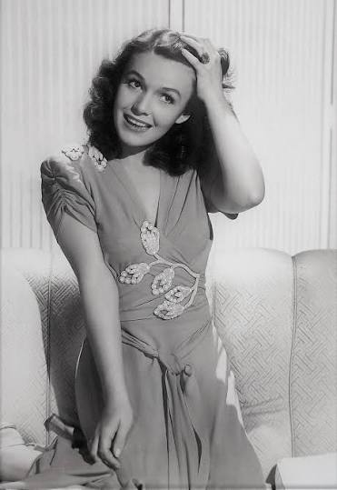
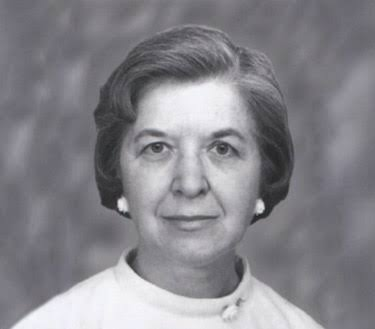

Uma viagem pela história
A ciência não aconteceu de uma vez.
Ela foi construída ao longo do tempo — por ideias, descobertas, cálculos e invenções. Muitas mulheres ajudaram a escrever essa história.
Começar ↓ 01
01
1843 · Computação
Ada Lovelace
Antes dos computadores modernos, ela já imaginava como uma máquina poderia seguir instruções.
Ao estudar a Máquina Analítica de Charles Babbage, Ada publicou notas que incluíam um método para calcular números de Bernoulli — frequentemente reconhecido como um dos primeiros algoritmos destinados a ser executados por uma máquina.
Uma ideia muito antes do computador pessoal. 02
02
1898 · Física e Química
Marie Curie
O estudo da radioatividade abriu novas portas para compreender a matéria.
Em 1898, Marie e Pierre Curie anunciaram evidências de dois novos elementos: o polônio e o rádio. O trabalho de Marie ajudou a transformar o estudo da radioatividade em uma nova área da ciência.
Pesquisa que ecoaria na física, na química e na medicina.
031903 · Invenção
Mary Anderson
Uma solução simples tornou dirigir sob chuva e neve muito mais seguro.
Mary Anderson patenteou um dispositivo de limpeza do para-brisa operado de dentro do veículo. A ideia surgiu ao perceber a dificuldade de motoristas para enxergar em condições ruins de tempo.
Hoje, o limpador de para-brisa é parte básica de um automóvel. 04
04
1942 · Comunicação
Hedy Lamarr
Uma atriz de Hollywood também ajudou a imaginar uma nova forma de proteger sinais de rádio.
Hedy Lamarr e George Antheil desenvolveram um sistema de comunicação por salto de frequência. A proposta buscava tornar sinais de rádio mais resistentes a interferências e tornou-se uma referência na história das comunicações sem fio.
Ciência, engenharia e criatividade no mesmo projeto. 05
05
1952 · Biologia molecular
Rosalind Franklin
Uma imagem de raios X ajudou a revelar a arquitetura da molécula da vida.
Rosalind Franklin e Raymond Gosling produziram a famosa Fotografia 51, uma imagem de difração de raios X do DNA. O padrão forneceu informações fundamentais para compreender sua estrutura helicoidal.
Uma fotografia que se tornou um marco da história da ciência. 06
06
1956 · Física
Chien-Shiung Wu
Um experimento mostrou que a natureza nem sempre respeita sua própria imagem no espelho.
Wu liderou o experimento que demonstrou a violação da paridade no decaimento beta, derrubando uma suposição fundamental da física da época e mudando a compreensão das interações entre partículas.
Um resultado que obrigou a física a rever uma de suas simetrias. 07
07
1962 · Matemática e espaço
Katherine Johnson
Antes de John Glenn entrar em órbita, ele pediu que Katherine conferisse os números.
Katherine Johnson verificou manualmente os cálculos computadorizados da trajetória da missão Friendship 7. Seu trabalho matemático foi essencial em missões do programa espacial norte-americano.
Quando a confiança precisava de números, ela era a referência.
081965 · Química de materiais
Stephanie Kwolek
Uma fibra extraordinariamente resistente nasceu de um experimento que parecia incomum.
Stephanie Kwolek descobriu uma solução polimérica que levou ao desenvolvimento do Kevlar, material conhecido por sua elevada resistência em relação ao peso e utilizado em diferentes aplicações de proteção e engenharia.
Da pesquisa química a materiais presentes no mundo real. 09
09
1972 · Medicina
Tu Youyou
Conhecimentos tradicionais e pesquisa moderna se encontraram na luta contra a malária.
A equipe de Tu Youyou isolou, em 1972, cristais do composto que mais tarde recebeu o nome de artemisinina. A descoberta abriu caminho para tratamentos antimaláricos extremamente importantes.
Uma descoberta que ajudou a salvar milhões de vidas.2026 · e depois
Essa linha do tempo ainda está sendo escrita.
Novas pesquisadoras, engenheiras, médicas, matemáticas e inventoras continuam ampliando aquilo que sabemos — e criando aquilo que ainda vamos usar.
Conhecer mais histórias